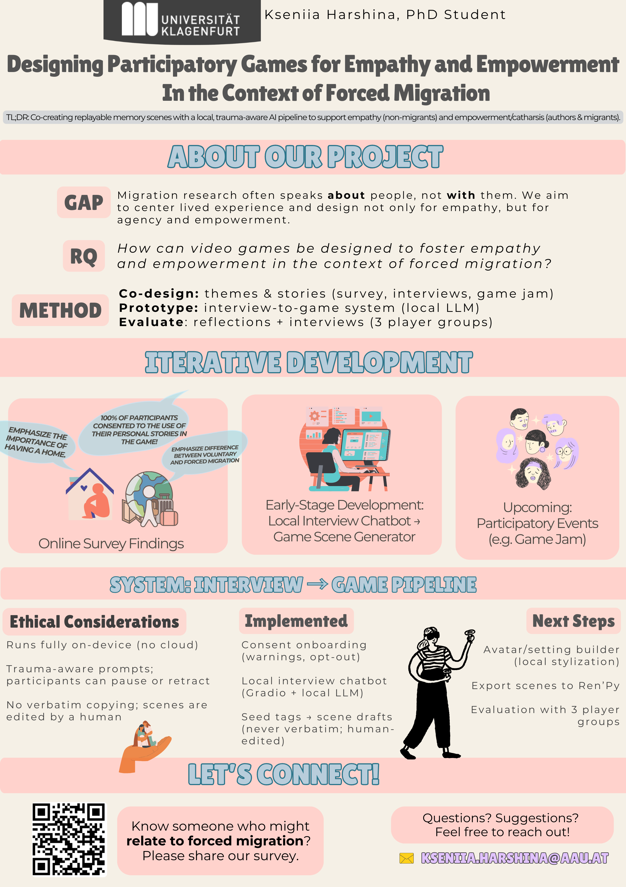

About
I'm Kseniia Harshina (she/they) — a PhD candidate in Game Studies & Engineering at the University of Klagenfurt.
My work explores how games can support catharsis, empowerment, and community healing, especially in relation to trauma, migration, and neurodiversity.
I combine participatory methods, intersectional design, and a good amount of weird, cozy experimentation — creating small games and community rituals along the way.
Research keywords
catharsis, empowerment, trauma-aware design, participatory game jams, queer & neurodivergent play

Research poster: Game pipeline for catharsis & empowerment, focused on forced migration narratives